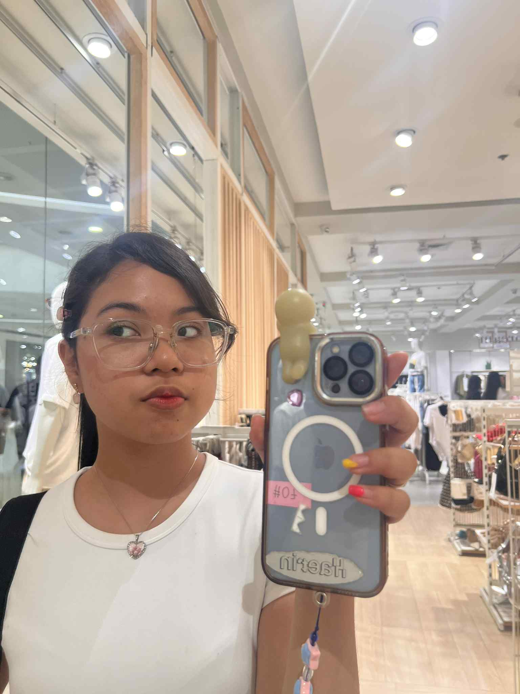
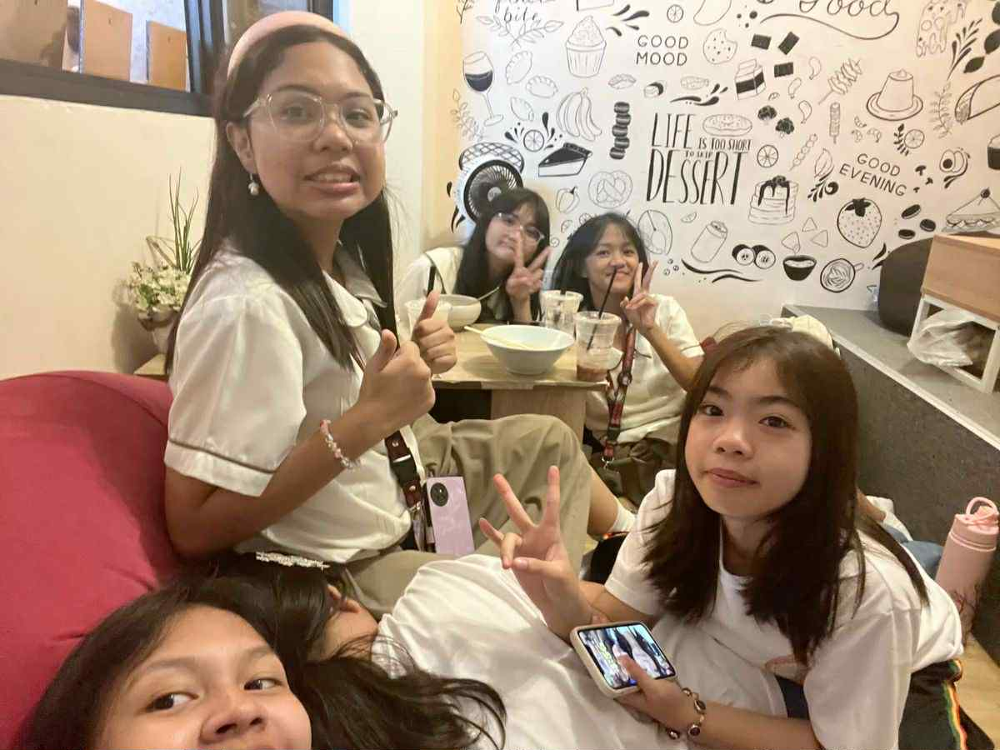
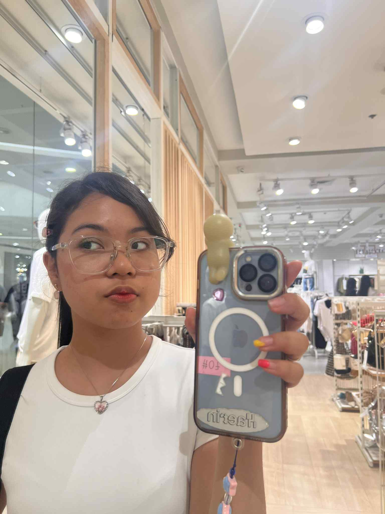
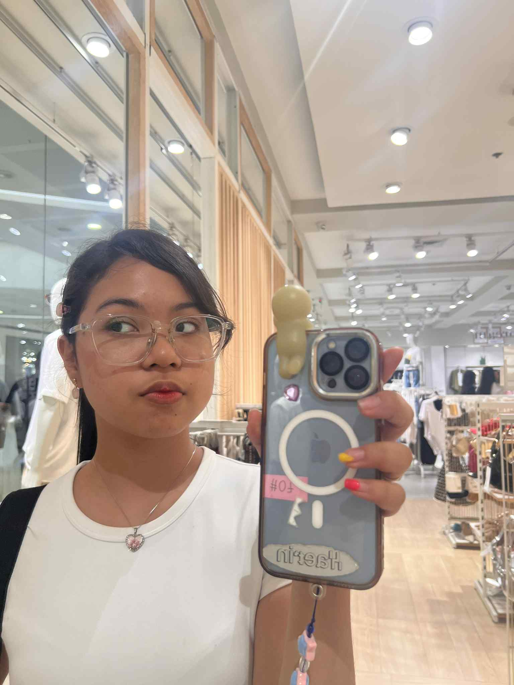

Hi po! Hehe bakit ka nandito? Crush mo 'ko noh??? joke! Below are niche facts about me, if you want to know more, click on the navigation bar!
HUGE FILM enthusiast
I love watching and critiquing films! Favorite intl film is Ladybird! and local film is Four Sisters and a Wedding.
I listen to almost everything
Yeah, even rock and punk music! But I love OPM and K-pop the most — depende rin sa mood and vibes honestly...
I have a childhood photo with Ryzza Mae
I LOVE YOU RYZZA MAE MY FELLOW OA GIRLIE üíñ
I won a Technokids quiz bee in elem!
My elementary school had a coding and design curriculum — cool, right?
Learn more about Jayzel!

Jayzel Zyrine °❀⋆.ೃ࿔*:･
Hi my name is Jayzel! I am currently 14 turning 15 this month! ❤️
My birthday is on October 23, 2010 and my top favorite things are:
Matcha
Movies
Writing
Art
Travelling
Fashion
Games
Sports
Public Speaking
My Family
My mom is a very strong woman who provides for me independently.
Although she’s often busy, she always finds time to make me feel loved.
My favorite memory with her was our trip to Hong Kong when I was younger! My Grandma also takes care of me and handles most of the household chores so my mom and I can focus on working and studying.
My Friends

I have many friends, but my closest ones are Joy and Yeuffa, The Skinnies,
The Accountability Family, Bianca, and Eunice! üíû
The photo above is from our trip to Tagaytay — one of my favorite memories! I hold my friends very close to my heart as they are the ones that comfort me and the people that I spend most of my time with! I love you guyss!

 
